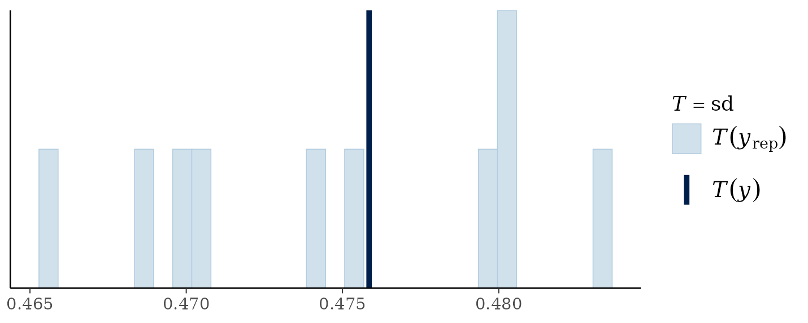
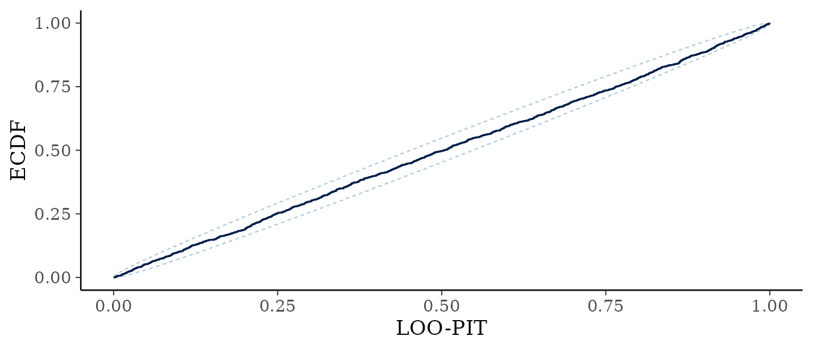

Checking Convergence and Fit
Noah Greifer
2026-09-18
Source:vignettes/diagnostics.Rmd
diagnostics.RmdIntroduction
Two questions get asked together and are worth separating. Has the sampler converged, meaning has it explored the posterior properly? And does the model fit, meaning does it describe the data?
The first is about the algorithm and the second is about the model; a fit can converge beautifully on a badly chosen family, and a well chosen family can be fitted by a chain that has not run long enough.
In this guide, we will take the two questions in that order. First
we’ll fit a model with four chains, hand it to diagnose(),
and then unpack what that summary reports and why, including the one row
(the additive predictor eta) whose conventional threshold
does not apply to a forest and the one quantity that is deliberately
left out of the table. Next we’ll ask whether the model describes the
data, using posterior predictive checks, a calibration plot for the
binary case in which those checks are weak, residuals, and a Bayesian
\(R^2\). A short checklist at the end
collects what we recommend running before reporting anything from a
fit.
library(bartisan)
# For parallelization; optional
if (rlang::is_installed("future")) {
future::plan(future::multisession)
}
data("rhc")
set.seed(2026)
fit <- bartisan(death ~ rhc + age + sex + race + edu + aps + meanbp + resp +
hema + pafi + paco2 + crea + surv2m + card,
data = rhc, family = binomial(), chains = 4)Convergence
Every Statistic in One Call (diagnose())
diagnose() computes every convergence and mixing
statistic in this section, says which of them fall short, and says what
to do about each. Everything it reports comes from the stored draws, so
it needs no other package.
diagnose(fit)
#> Convergence and mixing
#>
#> quantity rhat rhat_late ess_bulk ess_tail
#> loglik 1.16 1.34 17 64
#> splits.eta 1.01 1.02 332 540
#> eta.eta (average over observations) 1.00 1.01 1698 2754
#> eta.eta (worst 5% of observations) 1.06 1.11 56 330
#>
#> ✔ 4 chains, 3200 draws kept in total
#> ✖ R-hat is above 1.01 for loglik
#> ✖ That R-hat rests on only 17 effective draws, where 4 chains average 1.235
#> even when they agree
#> ℹ A longer warmup is not the fix: R-hat stays high on the second half of the
#> draws alone as well
#> ✔ The chains agree about the size of the forest
#> ✖ Bulk ESS is 17 for loglik, below 400
#> ✖ Tail ESS is 64 for loglik, below 400
#> ℹ The chains disagree about individual observations and agree about their
#> average (R-hat 1.00, 1698 effective draws)
#> ℹ Per-draw efficiency is lowest for loglik, which carries 0.5 effective draws
#> per hundred kept
#>
#> What to do
#>
#> • Raise `num_draws`, which was `800`. R-hat is above the threshold for a
#> quantity that carries too few effective draws for the threshold to mean
#> anything: with this many chains it would sit about where it does even if the
#> chains agreed exactly, as the check above reports. Effective sample size is
#> what makes it readable, and that grows with the total number of draws; using
#> fewer chains lowers the bar as well, since R-hat's null rises with the number
#> of chains being compared.
#> • If that does not settle it, reduce `num_trees`, which was `50`. A smaller
#> forest has fewer ways to represent the same fit, so the sampler has less room
#> to move between them.
#> • Then check the family. A likelihood that fits the data badly can give a
#> posterior with no single place to be; `bayesplot::pp_check()` is the
#> diagnostic.
#> • Note that the chains disagree about the fitted values of individual
#> observations and not about their average, which is the usual shape of this in
#> a forest. What that means for an estimand cannot be read off this table
#> either way, since an estimand is a contrast and a contrast can mix badly
#> where the function it contrasts mixes well. Compute it: `diagnose()` takes
#> the output of `estimate_effect()`, and `posterior::as_draws()` hands the
#> draws to `posterior::summarise_draws()` for anything else.The rest of this section is what it is reporting and why, which is
worth reading once; when the summary itself is enough,
vignette("bartisan") is the shorter tour of the whole
workflow.
Running More Than One Chain (chains)
chains = 4 above is doing the work. The default is one
chain, which produces estimates but no way to check most of what
matters, because R-hat compares chains to each other; with one chain it
is computed by splitting that chain, which catches drift but cannot
catch two chains settling in different places. Running four costs four
times as much sampling, which for most fits is a few seconds, and less
than that under a future plan.
More chains is not, however, a way to improve rhat, and
it is worth knowing which way it cuts before reaching for it. Effective
sample size depends on the total number of draws and not on how they are
divided, so twice as many chains and twice as long a chain buy the same
amount of it. rhat is not symmetric that way: because it
compares chains against each other, its value under a sampler with
nothing wrong is about 1 + chains / ess, so at 400
effective draws four chains sit at 1.010 and sixteen chains at 1.040.
Adding chains raises the bar it has to clear. When a fit fails on
rhat, longer chains are the fix; when it fails only on
effective sample size, either will do.
The table is in diagnose(fit)$table when it is wanted as
a data frame, and the checks and the advice are in $checks
and $advice.
rhat compares the variance between chains to the
variance within them (Vehtari et al. 2021); if the chains
have found the same posterior the two agree and the ratio is near 1.
ess_bulk and ess_tail are effective sample
sizes, meaning how many independent draws the correlated ones are worth,
in the middle of the distribution (i.e., the bulk) and in the tails
respectively.
The conventional thresholds are rhat below 1.01 and
effective sample sizes above about 400 for a quantity we intend to
report precisely. Those come from the general MCMC literature and are a
reasonable default here, with one exception described below.
diagnose() applies them, and takes both as arguments so
they can be moved.
Two of the columns are worth naming separately.
rhat_late is the same statistic computed on the second half
of the retained draws alone, which is what tells a warmup that ended too
early (i.e., too small a num_burn) from chains that have
each settled somewhere different: throwing away the early draws is
exactly what more num_burn would have done, so if that
fixes rhat, warmup was the problem. The
splits.* row is the total number of splitting rules in the
forest at each draw, the one quantity here that is about the trees
rather than about the fitted values, and which no general-purpose MCMC
diagnostic would think to look at.
The Rows of the Table
loglik is the log likelihood of the whole dataset at
each draw. It is a useful scalar summary of the fit, and usually the
slowest-mixing row in the table, since it moves with every observation’s
fitted value at once.
aux.* are the nuisance parameters of the family (i.e.,
the parameters that are not part of the additive predictor), and are
usually the best behaved rows in the table. The binomial likelihood has
none of its own, so none appear here, though a vc() coding
contributes its coefficients to aux, which is where the
aux.b.* rows in the bcf() table below come
from; a Gaussian fit would show aux.sigma, and a survival
fit its scale or baseline hazard.
eta.* is the additive predictor, and it gets two rows.
One summarizes the worst 5% of observations rather than the single
worst, because the worst of a thousand values is extreme even when every
chain has converged; the other is the average over observations. Reading
them against each other is the point of having both, because they
routinely differ by orders of magnitude: a forest settles the level of
the fitted function within a sweep or two and takes far longer to settle
which observation gets which share of it. A prediction for one
observation is governed by the worst-5% row.
Neither row settles an effect, and the average row in particular
should not be read as though it did. An effect is a contrast,
and a contrast can mix badly where the function it is a contrast of
mixes well, so what estimate_effect() or
avg_comparisons() reports needs diagnosing on its own draws
rather than inferring from this table. The section below does that.
One quantity is deliberately not in the table. The leaf prior scale,
in fit$sigma_mu, mixes badly in every BART implementation:
on one dataset its counterparts in dbarts and in
stochtree both come out above rhat 1.1 with
effective sample sizes in the tens out of 3000 draws, and
stochtree draws it exactly from its full conditional, so no
sampler can do better. It is a hyperparameter whose disagreement between
chains does not reach the fitted function, which on those same fits has
rhat 1.00 and thousands of effective draws, so reporting it
beside eta only produces an alarming row with nothing to
act on. It is out of this table and only out of this table: the draws
are in fit$sigma_mu and reach as_draws(), so
it can still be diagnosed by anyone who wants to.
The Exception for eta
The eta row is a high percentile over every observation,
so it is conservative by construction, and forests mix slowly on their
fitted values. Two chains can visit quite different collections of
trees, and a forest settles the level of the fitted function in a sweep
or two while taking far longer to settle which observation gets which
share of it, which is why the per-observation R-hats run high without
meaning the two chains disagree about anything we would report, so
whether two chains found the same trees is not a question the
eta rows can answer; splits.* is the row that
asks it.
On harder problems this shows up clearly. Below we fit the Friedman function, first with a chain far too short and then at the defaults.
set.seed(3)
fr <- as.data.frame(matrix(runif(400 * 10), 400, 10))
names(fr) <- paste0("x", 1:10)
fr$y <- 10 * sin(pi * fr$x1 * fr$x2) + 20 * (fr$x3 - 0.5)^2 +
10 * fr$x4 + 5 * fr$x5 + rnorm(400)
too_short <- bartisan(y ~ ., fr, family = gaussian(), chains = 4,
control = bartisan_control(num_trees = 20, num_burn = 50,
num_draws = 50))
diagnose(too_short)$table
#> quantity rhat rhat_late ess_bulk ess_tail ess_frac
#> 1 loglik 1.69 2.21 6.99 12.2 0.0350
#> 2 aux.sigma 1.21 1.39 14.65 25.9 0.0733
#> 3 splits.eta 1.70 1.97 6.99 29.6 0.0350
#> 4 eta.eta (average over observations) 1.01 1.01 169.70 193.9 0.8485
#> 5 eta.eta (worst 5% of observations) 1.83 1.97 6.59 13.9 0.0329
#> rhat_bad late_bad
#> 1 1.000 1.000
#> 2 1.000 1.000
#> 3 1.000 1.000
#> 4 0.000 0.000
#> 5 0.998 0.998Almost everything is bad. Every rhat but the average
over observations is far above the 1.01 threshold, and the effective
sample sizes are a fraction of the 200 draws kept (4 chains x 50 kept
draws per chain) on every row but that one. rhat_late is no
better than rhat on any row but the residual standard
deviation, which is the informative part: discarding the early draws
does not fix it, so this is not a warmup that ended too soon but chains
that have each settled somewhere different. Nothing from this fit should
be used.
long_enough <- bartisan(y ~ ., fr, family = gaussian(), chains = 4)
diagnose(long_enough)$table
#> quantity rhat rhat_late ess_bulk ess_tail ess_frac
#> 1 loglik 1.12 1.17 23.2 58.1 0.00725
#> 2 aux.sigma 1.03 1.04 101.1 1004.4 0.03160
#> 3 splits.eta 1.11 1.22 29.5 192.9 0.00921
#> 4 eta.eta (average over observations) 1.00 1.00 3275.0 3194.3 1.02343
#> 5 eta.eta (worst 5% of observations) 1.15 1.21 17.9 66.0 0.00561
#> rhat_bad late_bad
#> 1 1.00 1
#> 2 1.00 1
#> 3 1.00 1
#> 4 0.00 0
#> 5 0.99 1Everything has improved by a large factor, and the residual standard
deviation is nearly at the threshold. But the log likelihood and
eta are both still above 1.01, and eta’s
effective sample size is still in the tens. That residual is the
phenomenon described above rather than a chain that merely needs to be
longer, and adding draws does not reliably remove it.
When the eta row is elevated, the distribution behind it
is more informative than the maximum:
per_observation_rhat <- function(fit) {
draws <- fit$eta$eta
per <- nrow(draws) / fit$chains
index <- matrix(seq_len(per * fit$chains), per, fit$chains)
apply(draws, 2, function(column) {
posterior::rhat(matrix(column[index], per, fit$chains))
})
}
round(quantile(per_observation_rhat(fit), c(0.5, 0.9, 0.99, 1)), 3)
#> 50% 90% 99% 100%
#> 1.02 1.04 1.08 1.11The median is a little above 1 and so is most of the distribution, so
the worst-5% row in the table is not one badly behaved observation: the
fitted function as a whole mixes slowly here. That is the phenomenon
described above rather than a broken chain, and the two are told apart
by what happens to the quantities we report. If the log likelihood has
converged, along with any nuisance parameters the family has, and an
avg_comparisons() estimate is stable across chains and
across a longer run, the fit is usable.
If instead the log likelihood were badly elevated too, or the estimate moved when the chain was lengthened, that would be a chain that has not converged, and the answer is more draws or a simpler model.
Looking at the Chains (as_draws())
as_draws() hands the fit to posterior and
bayesplot. It carries the scalar parameters and a
representative set of eta columns.
library(posterior)
as_draws(fit) |>
summarise_draws()
#> # A tibble: 12 × 10
#> variable mean median sd mad q5 q95 rhat ess_bulk
#> <chr> <dbl> <dbl> <dbl> <dbl> <dbl> <dbl> <dbl> <dbl>
#> 1 loglik -8.32e+2 -8.32e+2 6.68 6.64 -843. -821. 1.16 17.1
#> 2 sigma_mu.eta 2.34e-1 2.30e-1 0.0457 0.0422 0.172 0.315 1.18 16.6
#> 3 eta[119] -1.50e+0 -1.49e+0 0.404 0.393 -2.17 -0.831 1.07 40.8
#> 4 eta[45] -4.32e-1 -4.43e-1 0.347 0.337 -0.992 0.163 1.04 83.6
#> 5 eta[209] -1.14e-3 4.95e-3 0.319 0.331 -0.521 0.505 1.02 238.
#> 6 eta[222] 2.83e-1 2.76e-1 0.315 0.295 -0.230 0.820 1.02 268.
#> 7 eta[955] 5.82e-1 5.82e-1 0.271 0.276 0.141 1.03 1.01 302.
#> 8 eta[559] 8.79e-1 8.79e-1 0.300 0.301 0.388 1.37 1.01 398.
#> 9 eta[377] 1.29e+0 1.27e+0 0.331 0.325 0.752 1.86 1.02 369.
#> 10 eta[1038] 1.66e+0 1.65e+0 0.392 0.372 1.02 2.30 1.01 376.
#> 11 eta[496] 2.01e+0 2.01e+0 0.354 0.348 1.44 2.60 1.01 348.
#> 12 eta[1135] 3.09e+0 3.08e+0 0.509 0.499 2.28 3.95 1.07 45.1
#> # ℹ 1 more variable: ess_tail <dbl>
library(bayesplot)
as_draws(fit, eta = 1) |>
mcmc_trace(pars = c("loglik", "eta[1]"))
What we want to see is four chains overlapping, wandering around the
same level, with no drift and no long excursions. eta = 1
selects the first observation; eta = TRUE gives a spread of
ten and eta = FALSE gives none.
Diagnosing the Quantity Being Reported
Everything above is about the parameters the sampler draws. What gets reported is usually not one of them: it is an effect, a contrast, a predicted probability at some covariate value, a difference between two subgroups. Those need their own diagnostics, because a contrast can mix badly where the function it is a contrast of mixes well, and nothing in the table above will say so.
When estimating a treatment effect, the quantity of interest is
produced by estimate_effect(), the output of which is
accepted by diagnose() directly. Below we fit a Bayesian
causal forest model to estimate the ATE:
bcf_fit <- bcf(death ~ age + sex + race + edu + aps + meanbp + resp +
hema + pafi + paco2 + crea + surv2m + card,
treat = ~rhc, data = rhc,
family = binomial("probit"), chains = 4)
estimate_effect(bcf_fit, estimand = "ATE") |>
diagnose()
#> Convergence and mixing
#>
#> quantity rhat rhat_late ess_bulk ess_tail
#> Y[1] - Y[0] 1 1.03 533 626
#> Y[0] 1 1.01 1000 1602
#> Y[1] 1 1.02 633 1055
#>
#> ✔ 4 chains, 3200 draws kept in total
#> ✔ R-hat is below 1.01 throughout
#> ✔ Warmup was long enough, since R-hat is already fine
#> ✔ Bulk ESS is at least 533 everywhere, above 400
#> ✔ Tail ESS is at least 626 everywhere, above 400
#>
#> ✔ Nothing to change.Three rows: the contrast, and the two average potential outcomes it is a contrast of. The effect is the row that falls short, at a bulk effective sample size well under 400 and an R-hat above the threshold, while the two averages it is built from are in better shape than it is. A difference can be worse than either of its parts, and that is the reading here.
Now compare what the fit’s own table says about the same sampler:
diagnose(bcf_fit)$table
#> quantity rhat rhat_late ess_bulk ess_tail
#> 1 loglik 1.02 1.06 94.41 270.1
#> 2 aux.b.rhc.0 1.22 1.25 14.12 30.6
#> 3 aux.b.rhc.1 1.14 1.25 32.96 68.2
#> 4 splits.(Intercept) 1.01 1.02 434.98 908.9
#> 5 splits.rhc 1.02 1.02 326.82 531.0
#> 6 eta.(Intercept) (average over observations) 1.21 1.36 14.61 58.2
#> 7 eta.(Intercept) (worst 5% of observations) 1.20 1.33 14.73 80.8
#> 8 eta.rhc (average over observations) 1.34 1.49 9.88 67.8
#> 9 eta.rhc (worst 5% of observations) 1.40 1.54 8.73 39.0
#> ess_frac rhat_bad late_bad
#> 1 0.02950 1 1
#> 2 0.00441 1 1
#> 3 0.01030 1 1
#> 4 0.13593 1 1
#> 5 0.10213 1 1
#> 6 0.00457 1 1
#> 7 0.00460 1 1
#> 8 0.00309 1 1
#> 9 0.00273 1 1The two forests are far worse than the estimand. Their R-hats are in the region of 1.4 to 1.7 with effective sample sizes in single figures, where the effect manages a bulk size in the low hundreds. That is not a contradiction: a varying coefficient model is \(f_0(x) + z\,f_1(x)\), and on the treated units the two forests are only jointly identified, so the sampler can move level between them while their sum, and much of what is built from it, stays where it was. The effect inherits part of that wandering and not all of it.
So the estimand’s diagnosis cannot be deduced from the fit’s in
either direction. Read only the eta rows here and the fit
looks unusable; read only the effect’s own table and the sampler looks
merely short of the thresholds; neither reading gives the other. Both
are worth running, and it is the second that decides whether the number
being reported can be reported.
Diagnosing Anything Else (summarise_draws())
For a quantity this package has no method for, posterior is
the general tool: anything that can be arranged as draws by chains can
be handed to summarise_draws(), which computes the same
statistics diagnose() reports.
The arranging is the only step with a decision in it. The sampler
stacks its chains, so the draws of any quantity are one long vector in
chain order, and folding it into an iterations-by-chains matrix is what
recovers the structure R-hat needs. Below, the quantity is an average
comparison computed by marginaleffects, whose draws come out of
posterior_draws():
library(marginaleffects)
drawn <- avg_comparisons(fit, variables = "rhc") |>
posterior_draws()
chains <- fit$chains
per_chain <- nrow(drawn) / chains
folded <- array(drawn$draw, dim = c(per_chain, chains, 1L),
dimnames = list(NULL, NULL, "ATE"))
folded |>
as_draws_array() |>
summarise_draws("mean", "rhat", "ess_bulk", "ess_tail")
#> # A tibble: 1 × 5
#> variable mean rhat ess_bulk ess_tail
#> <chr> <dbl> <dbl> <dbl> <dbl>
#> 1 ATE 0.0538 1.06 57.1 64.1The same statistics diagnose() reports, computed by a
different route on a quantity it has no method for, which is the point:
any posterior quantity can be diagnosed this way, including ones neither
package knows about. Draw it, fold it, summarize it.
Two things to get right. The fold has to match the order the draws
are stored in, which here is all of chain one, then all of chain two,
and so on; filling the array in that order is what
dim = c(per_chain, chains, 1) does. And the quantity has to
be the one being reported: diagnosing a prediction is not diagnosing the
contrast of two predictions, for the reason the section above gives.
Remedies for a Chain That Has Not Converged
Three things are worth trying, in the order in which they usually
help. More draws is the first: increasing
num_burn and num_draws fixes most cases.
A smaller forest is the second, since reducing
num_trees leaves fewer ways to represent the same function,
so the sampler mixes faster. A different family is the
third, because a likelihood that fits the data badly can produce a
posterior that is hard to explore, so the family is worth checking when
more draws and a smaller forest have not helped;
vignette("families") covers the alternatives.
Note these latter two options change the model itself, so only use them when required, not as a routine fix.
One thing to rule out first. rhat above 1.01 on a
quantity carrying only a handful of effective draws is not yet evidence
that the chains disagree, since that is roughly where rhat
sits when nothing is wrong, and diagnose() says so rather
than reporting a disagreement it cannot support. In that case the
effective sample size is what to fix, and more draws is the whole of the
remedy.
A Worked Example: More Draws, Same Model
The first remedy is the only one that leaves the model alone, so it
is worth seeing how far it goes on its own. Below, a fit that fails and
then the same model run longer; the formula, the family, the tree count
and every prior setting are identical between the two, and only
num_burn and num_draws move.
model <- death ~ rhc + age + aps + meanbp + surv2m
set.seed(2026)
short <- bartisan(model, data = rhc, family = binomial(), chains = 4)
diagnose(short)
#> Convergence and mixing
#>
#> quantity rhat rhat_late ess_bulk ess_tail
#> loglik 1.05 1.07 58 406
#> splits.eta 1.01 1.03 429 800
#> eta.eta (average over observations) 1.00 1.00 1568 2501
#> eta.eta (worst 5% of observations) 1.06 1.10 49 402
#>
#> ✔ 4 chains, 3200 draws kept in total
#> ✖ R-hat is above 1.01 for loglik
#> ✖ That R-hat rests on only 58 effective draws, where 4 chains average 1.069
#> even when they agree
#> ℹ A longer warmup is not the fix: R-hat stays high on the second half of the
#> draws alone as well
#> ✔ The chains agree about the size of the forest
#> ✖ Bulk ESS is 49 for eta.eta (worst 5% of observations), below 400
#> ✔ Tail ESS is at least 402 everywhere, above 400
#> ℹ The chains disagree about individual observations and agree about their
#> average (R-hat 1.00, 1568 effective draws)
#> ℹ Per-draw efficiency is lowest for eta.eta (worst 5% of observations), which
#> carries 1.5 effective draws per hundred kept
#>
#> What to do
#>
#> • Raise `num_draws`, which was `800`. R-hat is above the threshold for a
#> quantity that carries too few effective draws for the threshold to mean
#> anything: with this many chains it would sit about where it does even if the
#> chains agreed exactly, as the check above reports. Effective sample size is
#> what makes it readable, and that grows with the total number of draws; using
#> fewer chains lowers the bar as well, since R-hat's null rises with the number
#> of chains being compared.
#> • If that does not settle it, reduce `num_trees`, which was `50`. A smaller
#> forest has fewer ways to represent the same fit, so the sampler has less room
#> to move between them.
#> • Then check the family. A likelihood that fits the data badly can give a
#> posterior with no single place to be; `bayesplot::pp_check()` is the
#> diagnostic.
#> • Note that the chains disagree about the fitted values of individual
#> observations and not about their average, which is the usual shape of this in
#> a forest. What that means for an estimand cannot be read off this table
#> either way, since an estimand is a contrast and a contrast can mix badly
#> where the function it contrasts mixes well. Compute it: `diagnose()` takes
#> the output of `estimate_effect()`, and `posterior::as_draws()` hands the
#> draws to `posterior::summarise_draws()` for anything else.Four things are flagged. rhat is above the threshold,
and the check under it says that the R-hat in question rests on too few
effective draws for the threshold to mean anything, which is the case
the previous section says to rule out first: the chains are not
demonstrably disagreeing, they have not run long enough for the
statistic to be readable. Both effective sample sizes are short of 400
as well. Everything here points the same way, and none of it points at
the model.
So we run it longer, increasing the burn-in to 2000 and the number of
draws per chain to 8000. Nothing else changes, so we can call
update() on the previous model with our new arguments
supplied:
set.seed(2026)
longer <- update(short, num_burn = 2000, num_draws = 8000)
diagnose(longer)
#> Convergence and mixing
#>
#> quantity rhat rhat_late ess_bulk ess_tail
#> loglik 1.01 1.01 611 842
#> splits.eta 1.00 1.01 2776 5906
#> eta.eta (average over observations) 1.00 1.00 15660 24055
#> eta.eta (worst 5% of observations) 1.01 1.01 932 2243
#>
#> ✔ 4 chains, 32000 draws kept in total
#> ✔ R-hat is below 1.01 throughout
#> ✔ Warmup was long enough, since R-hat is already fine
#> ✔ The chains agree about the size of the forest
#> ✔ Bulk ESS is at least 611 everywhere, above 400
#> ✔ Tail ESS is at least 842 everywhere, above 400
#> ℹ Per-draw efficiency is lowest for loglik, which carries 1.9 effective draws
#> per hundred kept
#>
#> ✔ Nothing to change.Nothing is flagged. The checks report R-hat below 1.01 throughout, though the table rounds too coarsely to show it, and both effective sample sizes clear 400 with room. What is left of it sits on the log likelihood and the worst-5% row, which is where a forest’s largest R-hat usually sits. This fit can be reported from.
Two things about the arithmetic are worth taking from it. The first
is that effective sample size grows roughly in proportion to the draws,
so the shortfall tells you the factor you need: a fit an order of
magnitude short of 400 needs about an order of magnitude more draws, not
a little more. An intermediate run at num_burn = 1000 and
num_draws = 4000 cleared both effective-sample-size
warnings on these data and still left R-hat at 1.010, a hair over the
line, which is the usual shape of the last stretch.
The second is that the estimate of effective sample size is itself noisy, and can fall as the chain lengthens: a short chain cannot see autocorrelation at long lags, so it reports an efficiency the chain does not have. Reading a single ESS figure as exact invites chasing it; the factor is what to read.
Increasing draws does not always suffice. Doing so sufficed here because the flagged R-hat was the unreadable kind, resting on too few effective draws. Where R-hat instead stays above the threshold however many draws are added, as it does for the Friedman fit above, the chains genuinely disagree and more of them will not help. That is when the remedies that change the model come up, and the order in the list above is the order to try them in.
Fit
Convergence says the sampler did its job; it says nothing at all about whether the model is right. The checks below assess the fit of the model to the data.
What the Prior Is (prior_summary())
Everything else in this section compares the model to the data it was fitted to. Two checks are worth running before any of that information has been spent, and the first is simply to read the prior back.
rstantools::prior_summary(fit)
#> Priors
#>
#> Trees
#> • 50 trees per additive predictor, summed. A node at depth d branches with
#> probability 0.95 * (1 + d)^-2, so the root splits with probability 0.95 and a
#> node at depth 3 with 0.059.
#>
#> Leaves
#> • Each leaf value is Normal(0, 0.212^2), that scale being 3 * s / (2 *
#> sqrt(50)) with s the response's scale on the link scale. The scale is itself
#> given a half-Cauchy prior centred there and is estimated.
#>
#> Splitting variables
#> • The share of the rules each of the 14 predictors receives is Dirichlet(1 /
#> 14), whose concentration enters as a / (a + 14) ~ Beta(0.5, 1). Both are
#> estimated.
#>
#> Decision rules
#> • Soft, with "smoothstep" gates. Each tree's bandwidth is drawn from an
#> exponential with mean 0.1, on predictors mapped to [0, 1], and is estimated.
#>
#> Family: binomial, logit link
#> • No parameters of its own beyond the additive predictors above.
#>
#> ℹ The leaf scale, and any number above read off the response, are calibrated
#> rather than fitted; that is how a BART prior is specified.
#> ℹ `prior_only = TRUE` in `bartisan()` draws from all of this, so that what it
#> implies can be read on the outcome's own scale.This is the prior the engine was given rather than the one we wrote,
and the two are not the same object: we named no priors at all, and the
defaults are a function of the response and of the number of trees. Note
in particular that the leaf scale is not a number anyone typed. It is
3 * s / (k * sqrt(num_trees)), so halving the number of
trees widens each leaf’s prior by a factor of \(\sqrt 2\) and leaves the prior on their sum
alone, which is why num_trees is not the tuning knob it
looks like.
Before the Data: The Prior Predictive (prior_only)
Reading the prior back is not the same as knowing what it implies.
The settings in bartisan_control() are statements about
trees and leaves, and nobody has intuition for what k = 2
implies about a patient’s chance of dying. A prior predictive check puts
the prior on the outcome’s own scale, where it can be judged.
prior_only = TRUE fits the same model to no data. Every
observation is given a weight of zero, and since the weight multiplies
that observation’s contribution to the likelihood, the likelihood goes
flat and the sampler draws from the prior.
set.seed(2026)
prior <- bartisan(death ~ rhc + age + sex + race + edu + aps + meanbp + resp +
hema + pafi + paco2 + crea + surv2m + card,
data = rhc, family = binomial(), prior_only = TRUE)What comes back is an ordinary fit whose draws are prior draws, so everything that reads a fit reads this one. The question to put to it is whether the risks the prior considers plausible are ones a critically ill patient could actually have.
p <- c(.01, .1, .5, .9, .99)
quantile(predict(prior, type = "response", draws = TRUE), p)
#> 1% 10% 50% 90% 99%
#> 0.00963 0.21435 0.65584 0.93317 0.99522
quantile(predict(fit, type = "response", draws = TRUE), p)
#> 1% 10% 50% 90% 99%
#> 0.192 0.368 0.677 0.892 0.948The prior runs from about .01 to about .99, which is what we want of a prior on a probability: it rules almost nothing out and asserts almost nothing. The fitted model runs from about .19 to about .95 over the same quantiles, so the data have brought it a long way in from where it started. A prior that had come back concentrated near zero and one, or confined to a narrow band in the middle, would be worth changing before going any further.
There is one thing not to read into this. The median sits close to the observed death rate because the additive predictor is anchored at an intercept-only fit, which is how a BART prior is specified and not a leak. The replicates take their location and scale from the response and everything else from the prior, so read them for shape and spread rather than for level.
Every family supports this except ordinal() and
ordbeta(), whose cutpoints are drawn from the likelihood
alone and so have nothing to fall back on when the likelihood goes flat;
?bartisan has the details.
Posterior Predictive Checks (pp_check())
A posterior predictive check simulates outcomes from the fitted model and compares their distribution to the observed one.
pp_check(fit)
For a continuous outcome this is the workhorse check, and systematic
differences are what to look for: replicates that are too narrow, that
miss a second mode, or that put mass where the outcome cannot go.
Simulating negative values for an outcome that cannot be negative says
the family is wrong, and vignette("families") covers the
alternatives.
For a binary outcome it is a weak check, which is worth knowing before reading too much into it. There are only two values the replicates can take, so they will match the observed proportion unless the model has gone badly wrong; passing this check tells us almost nothing. The calibration check below is what to read instead.
Checks Worth Reaching For
type names any of bayesplot’s checks without
its ppc_ prefix, and four of them earn their place for a
forest.
The default compares whole distributions, which is a coarse question.
A test statistic is a sharper one: type = "stat" compares
any summary of the replicates with the same summary of the outcome, so
the spread, a tail quantile, or the share of zeros can each be asked
about on its own. The share of zeros is the one that finds an unmodeled
point mass, which is what vignette("families") recommends
zi_poisson() and tweedie() for.
pp_check(fit, type = "stat", stat = "sd")
Calibration of the whole predictive distribution is
what type = "loo_pit_ecdf" asks. Each observation is
transformed through its own leave-one-out predictive distribution, which
should leave a uniform if the model is calibrated, and the plot compares
the result with one. A curve that leaves the band says the predictive
spread is wrong even where the mean is right, which the default check
cannot see.
pp_check(fit, type = "loo_pit_ecdf")
Where a residual is left, rather than how big it is,
is what type = "error_scatter_avg_vs_x" shows: the average
residual against a predictor, which is where a missing interaction
appears as structure. And type = "intervals" draws a
predictive interval per observation, so systematic under-coverage is
visible as a run of points outside their intervals.
The rest apply where the response allows, and say so when it does
not: a rootogram wants counts, a bar plot wants discrete values, a
calibration plot wants a binary outcome.
type = "km_overlay" is the one written for censored data,
overlaying the replicate survival curves on the observed Kaplan-Meier
curve; it takes the censoring indicator from the fit’s own response, and
needs the ggfortify package installed alongside
bayesplot.
Calibration
The useful question for a binary outcome is whether the predicted probabilities mean what they say: among the patients the model gave a 30% chance of dying, did about 30% die?
pp_check(fit, type = "loo_calibration")
A line on the diagonal means the probabilities are calibrated, and this one sits close to it across the whole range. The dots along the bottom show where the predictions fall, so a departure over a stretch holding few patients can be discounted.
A line above the diagonal at the left and below it at the right means the predictions are too extreme, which is the usual failure of an overfitted model; the opposite pattern means they are too timid, which is what heavy shrinkage produces.
Each patient is judged here against a probability estimated without
them, which is what separates this from the in-sample version,
type = "calibration". That one reads optimistically, by
however much the model has fitted the individual patients rather than
the pattern. fitted() returns the probabilities themselves,
for binning them some other way.
Residuals
For a continuous outcome, residuals plotted against fitted values
read the way they would for a linear model, with one difference. A
forest shrinks its predictions toward the overall mean, so a mild
positive trend is expected even when the model is correct: the highest
fitted values are pulled down and the lowest pulled up. A strong slope
is not expected, and a fan shape means the spread of the outcome depends
on the predictors, which gaussian_ls() models directly.
For a binary outcome, the residuals take two values for any given fitted probability and the plot is not informative; the calibration check above is what to use instead.
How Much the Model Explains (r2())
performance::r2(fit)
#> # Bayesian R2 with Compatibility Interval
#>
#> Conditional R2: 0.172 (95% CI [0.138, 0.204])This is the Bayesian \(R^2\) of Gelman et al. (2019), computed from the posterior rather than from a single fit, so it comes with an interval and cannot exceed 1. For a binary outcome it is bounded well below 1 by the outcome’s own randomness, so it is best read as a relative measure rather than against any absolute standard.
A Checklist
Before fitting in earnest we read the prior back with
prior_summary() and run the model once with
prior_only = TRUE, checking that the replicates fall where
the outcome can actually go, since a prior worth changing is cheapest to
change before any of the data’s information has been spent. Then, before
reporting anything from a fit, we run it with chains = 4
and pass it to diagnose(), reading what that says to
change: it applies the thresholds, names the rows that fall short, says
when an R-hat rests on too few effective draws to be read at all, and
separates a warmup that ended too early from chains that have each
genuinely settled somewhere different. We then run
pp_check() and look for systematic differences, checking in
particular that the replicates respect any bound the outcome has (e.g.,
a count that cannot go below zero), and for a binary outcome we read a
calibration plot instead, since the predictive check has little to say
there.
Where to Go Next
vignette("comparison") covers choosing between models
once each of them fits, and vignette("families") covers
what to do when the posterior predictive check says the family is
wrong.